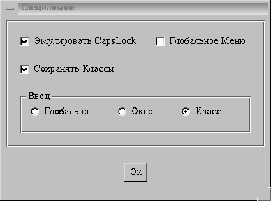
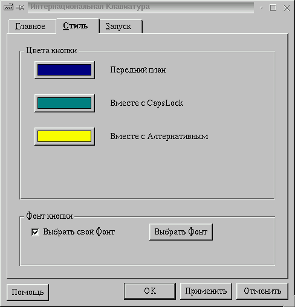
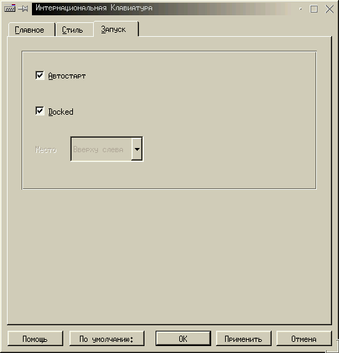

Next Previous Table of Contents
Персональная конфигурация включает все необходимые установки KiKbd. Для изменения конфигурации необходимо пользоваться программой kcmikbd. Когда вы запускаете KiKbd в первый раз, вы получите копию системной конфигурации.

Используя кнопки Добавить и Удалить вы можете создать список необходимых вам раскладок. Верхняя раскладка в списке станет основной при старте KiKbd.
Если вы используете более двух раскладок (например английскую, русскую КОИ8 и русскую 1251), очень удобно включить Использование горячего списка. В этом случае с клавиатуры будут переключаться только две раскладки - основная и дополнительная активная. Поменять дополнительную активную можно из меню KiKbd. Если же еще включить стиль ввода Окно или Класс то вы с успехом можете набирать КОИ8 в одном окне и 1251 в другом.
Для переключения раскладок с клавиатуры вы можете назначить комбинации клавиш из списка. Так же можно назначить альтернативный переключатель для набора альтернативных символов.
Если включить режим сигнала вы будете информированы о любом переключении раскладок.

Если включить эту опцию, вы легко можете активировать меню KiKbd в любом месте экрана удерживая какое-то время клавиши выбранного переключателя.
Для некоторых раскладок (как например для русской) есть проблемы с Caps Lock. KiKbd может решить эту проблему эмулируя Caps Lock. В этом случае статус Сaps Lock будет отображаться не лампочками клавиатуры а цветом фона кнопки KiKbd.
Вы можете выбрать:
Если вы выбрали стиль ввода Окно то вы можете сохранять текущее соответствие раскладок оконным классам при окончании работы и восстанавливать это соответствие в следующей сессии.
Вы можете назначить фонт и установить три цвета:

Это текст надписи на кнопке KiKbd.
Этот цвет фона будет обозначать включенный Caps Lock если включен режим эмуляции Caps Lock.
Этот цвет фона будет обозначать нажатый Альтернативный переключатель.
Можно выбрать специальный фонт для KiKbd или использовать основные установки KDE.

При включенной этой опции KiKbd будет запускаться автоматически в начале каждой сессии KDE.
При включенной этой опции KiKbd будет "упрятан" в специальной области kpanel.
Если вам не нравиться "docked" KiKbd или вы не пользуетесь kpanel, KiKbd может разместиться в одном из четырех углов экрана.
Next Previous Table of Contents